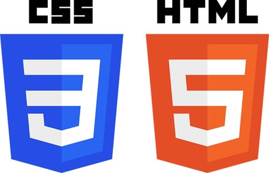

Hi! I'm Reese Parsons
Welcome to my portfolio website. I am a first year student in the IT Web Programming student at NSCC Truro Campus! On this website, you will find my resume with all my contact info, my work experience, as well as my education experience. Also found on this website will be a page featuring all the web apps I have created in the IT Web Programming course. Lastly, you will find a page which includes other samples, such as projects from other courses not specific to Web Programming, such as Database, and Logic and Programming.
